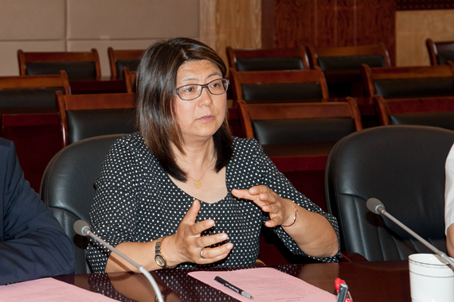
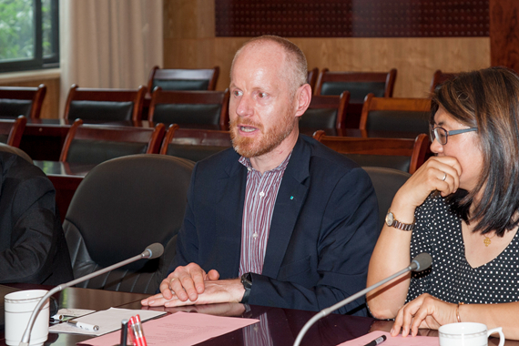

峨眉校区、德国奥斯特法利亚应用科学大学共赴峨眉山市交流访问
作者：汉斯猫
时间：2017-05-17 21:31:03 | 来源：本站
2017年5月16日下午，由西南交大峨眉校区负责人带队，与到访的德国奥斯特法利亚应用科学大学代表团 共赴峨眉山市拜访交流，共商合作事宜，峨眉山市委、市政府对此次三方会谈高度重视。

德国奥斯特法利亚应用科学大学刘晓波教授、德国工程师协会布伦瑞克分会主席巴赫姆教授就德国工业技术发展、 教授治学、研究成果转化及双方可能进行的教育合作等方面与地方政府交换了意见。
 随后，双方就未来可能涉及的合作领域进行了深入交流，一致同意建立和完善三方合作对接机制，加快推进三方合作的进程。 峨眉山市相关部门负责人，交大峨眉校区机械工程系主任冯鉴和唐阳教授等校区部门领导参加交流会谈。